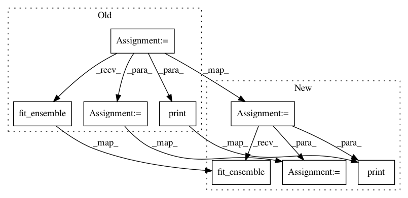

8442321b9b7a7cef7e3806b525965c36cea1549e,examples/60_search/example_parallel_manual_spawning.py,,,#,97
Before Change
p.join()
print("Starting to build an ensemble!")
automl = AutoSklearnClassifier(
time_left_for_this_task=30,
per_run_time_limit=15,
ml_memory_limit=1024,
shared_mode=True,
ensemble_size=50,
ensemble_nbest=200,
tmp_folder=tmp_folder,
output_folder=output_folder,
initial_configurations_via_metalearning=0,
seed=1,
metric=accuracy,
)
// Both the ensemble_size and ensemble_nbest parameters can be changed now if
// necessary
automl.fit_ensemble(
y_train,
task=MULTICLASS_CLASSIFICATION,
precision="32",
dataset_name="digits",
ensemble_size=20,
ensemble_nbest=50,
)
////////////////////////////////////////////////////////////////////////////////////////////////////////////////////////////////////////////////////////
// Report the score of the final ensemble
// ======================================
predictions = automl.predict(X_test)
print(automl.show_models())
print("Accuracy score", sklearn.metrics.accuracy_score(y_test, predictions))
After Change
// Wait a second for workers to become available
time.sleep(1)
automl = AutoSklearnClassifier(
time_left_for_this_task=30,
per_run_time_limit=10,
ml_memory_limit=1024,
tmp_folder=tmp_folder,
output_folder=output_folder,
seed=777,
// n_jobs is ignored internally as we pass a dask client.
n_jobs=1,
// Pass a dask client which connects to the previously constructed cluster.
dask_client=client,
)
automl.fit(X_train, y_train)
automl.fit_ensemble(
y_train,
task=MULTICLASS_CLASSIFICATION,
dataset_name="digits",
ensemble_size=20,
ensemble_nbest=50,
)
predictions = automl.predict(X_test)
print(automl.sprint_statistics())
print("Accuracy score", sklearn.metrics.accuracy_score(y_test, predictions))
// Wait until all workers are closed
process_python_worker.join()
In pattern: SUPERPATTERN
Frequency: 3
Non-data size: 8
Instances
Project Name: automl/auto-sklearn
Commit Name: 8442321b9b7a7cef7e3806b525965c36cea1549e
Time: 2020-09-25
Author: feurerm@informatik.uni-freiburg.de
File Name: examples/60_search/example_parallel_manual_spawning.py
Class Name:
Method Name:
Project Name: automl/auto-sklearn
Commit Name: 938175ddb4bd062d682c237f0ccc90d68cf410c3
Time: 2020-12-02
Author: feurerm@informatik.uni-freiburg.de
File Name: examples/60_search/example_sequential.py
Class Name:
Method Name:
Project Name: automl/auto-sklearn
Commit Name: 05e7263c6fbfa46e30bb0f4d9fe2389366af940b
Time: 2021-01-18
Author: 44504424+franchuterivera@users.noreply.github.com
File Name: examples/60_search/example_sequential.py
Class Name:
Method Name: